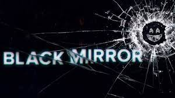

Tabla de contenidos
1. Seccion dedicada a las series
2. Seccion dedicada a las peliculas
4. Ir directamente al formulario
En este blog compartiré mis pensamientos, experiencias y reflexiones sobre estos temas. Espero que encuentres mis artículos entretenidos e informativos.
Soy Noelia Jiménez, una estudiante de informática de Burrina que ama los animales, la cocina keto, las series apocalípticas,zombies y de asesinos en serie y peliculas aunque me gustan los mismos estilos que las series soy muy fan del cine español sobre todo mis directores favoritos son Pedro Almodovoar e Isabel Coixet entre otros.
Asi que sobre las peliculas cada semana subire un articulo interesante sobre mis directores y peliculas favoritas.
Os voy a dejar una pequeña seleccion de citas que cada semana ire subiendo una,mediante el formulario que mas abajo os indico me podeis mandar las vuestras e ire subiendolas.
Mario Benedetti escribio : “No vayas a creer lo que te cuentan del mundo (ni siquiera esto que te estoy contando) ya te dije que el mundo es incontable”.
Os ire dejando cada semana dos de mis series favoritas.
AMERICAN HORROR HISTORY
(A veces abreviada como AHS) es una serie de televisión estadounidense
de antología y horror creada por Ryan Murphy y Brad Falchuk para la cadena de cable FX.
Cada temporada se concibe como una miniserie autónoma, siguiendo un conjunto diferente de personajes y escenarios,
y un argumento con su propio «principio, medio y fin». Algunos elementos de la trama de cada temporada están vagamente inspirados en hechos reales.
Muchos actores aparecen en más de una temporada, pero a menudo interpretan un nuevo personaje. Evan Peters, Sarah Paulson y Lily Rabe son los que más han regresado,
todos apareciendo en nueve de once temporadas, con Frances Conroy y Denis O'Hare apareciendo en ocho y siete, respectivamente, y Kathy Bates en cinco.
Otros actores notables como Jessica Lange, Jamie Brewer, Angela Bassett, Adina Porter y Finn Wittrock aparecen en cinco de las once temporadas.

Noticias de la ultima temporada. Estrenos
Pagina oficial. Twitter
La miniserie relata la vida del asesino Jeffrey Dahmer, y explora los diferentes motivos que probablemente lo llevaron a convertirse en uno de los asesinos en serie más famosos de los Estados Unidos.
A lo largo de la serie se exploran vivencias de su infancia y adolescencia, influenciadas por un padre ausente y una madre drogadicta.
El interés de Dahmer por los cadáveres se inicia desde muy pequeño en su niñez, junto a su padre, cuando este le enseña a diseccionar animales muertos como forma de compartir momentos de cercanía con su hijo realizando el hobby que le apasionaba. Estos sucesos impulsan su obsesión por la muerte y los cuerpos sin vida, lo que resulta en su primer homicidio accidental en 1978 a la edad de 18 años.
Entre los años 1978 y 1991, Jeffrey Dahmer asesinó a 17 personas, siendo todas sus víctimas hombres y niños adolescentes, principalmente afroamericanos.
Tiene 1 temporada y consta de 10 capitulos.
BLACK MIRROR
Black Mirror (en español: Espejo Negro) es una serie de televisión antológica británica de ciencia ficción distópica/costumbrista creada por Charlie Brooker en 2011.
Descrita por su productora como «un híbrido de The Twilight Zone y Relatos de lo inesperado que se nutre del malestar contemporáneo sobre nuestro mundo moderno»,
la serie se caracteriza por presentar relatos autoconclusivos, algunos con una ambientación distópica, escenarios postapocalípticos, otros presentan una sátira, una trama de fantasía, una realidad alternativa, sociedades orwellianas
o incluso ambientados en una utopía, mostrando generalmente un sentimiento de «tecno-paranoia» y, en gran parte, cómo la tecnología afecta al ser humano.
En cuanto al contenido del programa y la estructura, Brooker ha declarado: «cada episodio tiene un tono diferente, un entorno diferente, incluso una realidad diferente, pero todos son acerca de la forma en que vivimos ahora, y la forma en la que podríamos estar viviendo en 10 minutos si somos torpes».

Tiene 6 temporadas y cada temporda tiene varios capitulos.
En esta seccion os voy dejando tablas de la filmografia de directores que tiene peliculas muy especiales.
| Pedro Almodovar |
|---|
| Volver |
| Todo sobre mi madre |
| Madres paralelas |
| La piel que habito |
| Mujeres al borde de un ataque de nervios |
| Dolor y gloria |
| Isabel Coixet |
|---|
| Cosoas que nunca te dije |
| La libreria |
| Elisa y Marcela |
Algunas peliculas por genero:
En este artículo voy a compartir una receta de hamburguesa keto que es muy fácil de hacer y está deliciosa.
Ingredientes:
Instrucciones:
Conclusión: Esta receta de hamburguesa keto es una forma estupenda de disfrutar de una comida deliciosa y saludable.

Masa de pizza keto(~nam!):
Instrucciones:
Mi idea de topings para la masa:
Yo la hice con una base de tomate queso jamon york, champiñones y olvias negras.
¡Pero tu puedes pobrar como mas te guste!

Ejemplo de cenas semanal keto
| Lunes | Martes | Miercoles | Jueves | Viernes | Sabado | Domingo |
| Pollo con brocolí | Tortilla francesa con quesito y atun | Hamburguesa keto | Pure de pollo y un quesito | Lenguado a la plancha con verduritas | Pizza keto de peperoni con queso | Hamburguesa a la plancha con brocolí |
Enlaces de interés
Pagina web con recetas keto muy saludables ademas de una gran variedad de libros para comprar y con muchos de ellos tambien gratuitos para descargar. keto con Laura
Tienda keto donde podras encotrar una multitud de productos. Tienda de productos keto
Correo electrónico Tambien podeis contactar conmigo a traves de este mail para cualquier cosa y en la brevedad posible ire contestando.